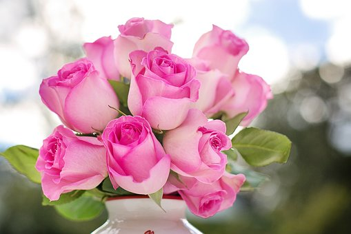
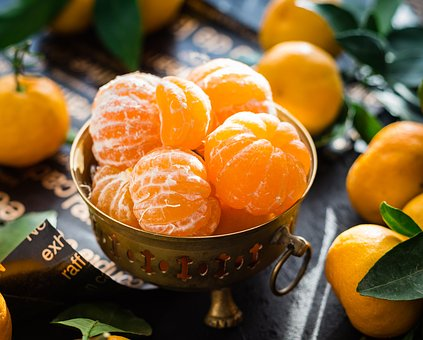
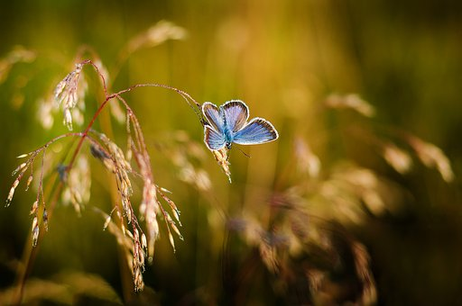

How to resize images with PIXLR

In order to resize my image, I clicked the Image Tab, and went to the Image size. This then allows you to change the size of the picture.
How to convert images from png to jpg


How to crop image with PIXLR

In order to crop my image, I click on the Image Tab, go down to crop and crop according to what you want
How to put a filter on an image

To filter the picture, go to the filter tab and choose what filter you want